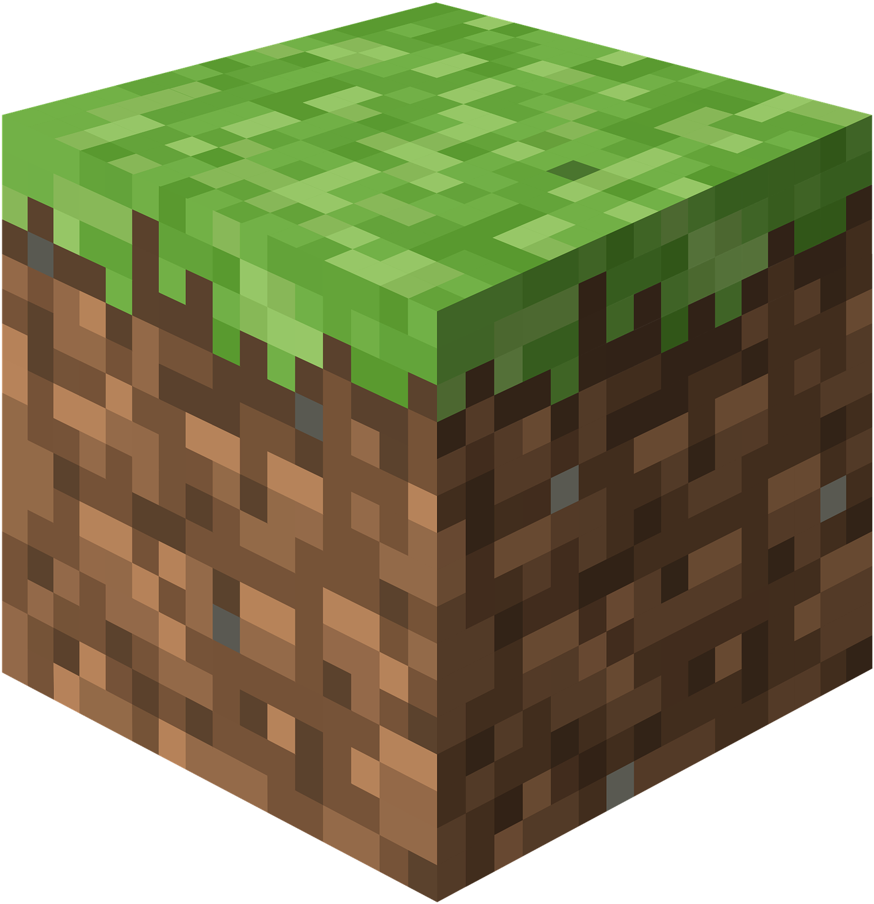

<!DOCTYPE html>
<html xmlns="http://www.w3.org/1999/xhtml" xml:lang="cs" lang="cs">
 <head>
  <meta http-equiv="content-type" content="text/html; charset=utf-8" />
  
  <title>Minecraft průvodce</title>
<link rel="stylesheet" href="style.css">
</head>
<body>

</body>
</html>
<h1>Minecraft průvodce</h1> 
<div id='container'>
</div>

<!DOCTYPE html>
<html lang="cs">
<head>



    <meta charset="UTF-8">
<meta name="viewport" content="width=device-width, initial-scale=1.0">
<style>
    body {
        font-family: Orbitron, Arial;
        margin: 1px;
        padding: 1px;
    }

    .menu button {
        flex: 1;
        background-color: rgb(206, 206, 206);
        color: black;
        padding: 30px;
        cursor: pointer;
        text-align: center;
        border-radius: 5px;
        border: none;
        transition: transform 1s, background-color 1s;
        font-size: 25px;
    }

    .menu button:hover {
        background-color: rgb(180, 238, 180);
        transform: scale(1.1);
    }

    .content {
        padding: 50px;
    }
</style>
</head>
<body>
    <div class="menu">
    <a href="poznamkovyblok3.html"><button>Domů</button></a>
    <a href="Creative.html"><button>Creative</button></a>
    <a href="Survival.html"><button>Survival</button></a>
</div>

<h1>Co je minecraft a jeho vznik </h1>
 <p> Minecraft je počítačová hra, která umožňuje hráčům tvořit, objevovat a přežívat ve světě složeném z kostek. Hra byla poprvé vydána v roce 2009 a od té doby se stala jedním z nejúspěšnějších titulů v herní historii. V Minecraftu můžeš stavět cokoliv – od jednoduchých domků až po propracovaná města, hrady, nebo dokonce funkční počítače pomocí tzv. redstonu. Díky tomu je hra nejen zábavná, ale také velmi kreativní a rozvíjí představivost.
 </p>

<p> Za vznikem hry stojí švédský vývojář Markus Persson, známý jako „Notch“. Na začátku roku 2009 začal vytvářet jednoduchou sandboxovou hru, která se inspirovala několika jinými tituly, například Infiniminer nebo Dwarf Fortress. První hratelná verze Minecraftu byla zveřejněna 17. května 2009 jako „Minecraft Classic“. Hráči si ji mohli zdarma stáhnout a stavět v nekonečném světě bez pravidel.
 </p>

 <p> V průběhu dalších měsíců se Minecraft rychle vyvíjel. Přibyly nové bloky, tvorové (tzv. mobové), herní režimy jako Survival a Creative a také možnost hraní po síti. Komunita kolem hry rostla obrovským tempem. V roce 2011 byla vydána plná verze Minecraftu a Notch předal vývoj týmu Mojang, který založil. V témže roce Minecraft získal cenu za nejlepší nezávislou hru roku.
</p>

<p> V roce 2014 koupila společnost Microsoft studio Mojang i s celou hrou za 2,5 miliardy dolarů. Přestože se někteří fanoušci obávali změn, hra si zachovala svůj charakter a Microsoft se zaměřil na rozšíření značky, podporu více platforem a výuku programování pomocí Minecraft Education Edition.
</p>

<p> Minecraft dnes existuje ve více verzích – Java Edition pro PC, Bedrock Edition pro mobily a konzole, a Education Edition pro školy. Hra podporuje různé režimy: Creative (tvůrčí), Survival (přežití), Adventure (dobrodružný) a Hardcore. Díky jednoduchému vzhledu, ale téměř neomezeným možnostem, se Minecraft stal nástrojem nejen pro hraní, ale i pro učení a výuku.
Minecraft je víc než jen hra. Je to svět, kde každý může být stavitelem, dobrodruhem i vynálezcem. A i po více než deseti letech si stále udržuje svou popularitu a přitahuje miliony hráčů po celém světě.
</p>


  
<p> Tento text pochází z článku na webu <a href="https://minecraft.fandom.com/cs/wiki/Minecraft_Wiki"> minecraft.fandom.com</a></p>
</body>
</html>
